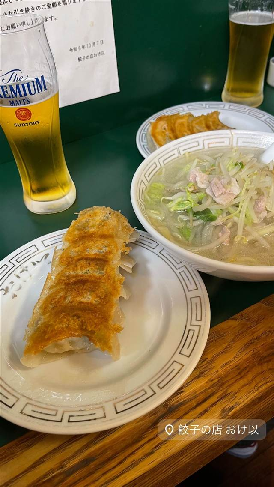
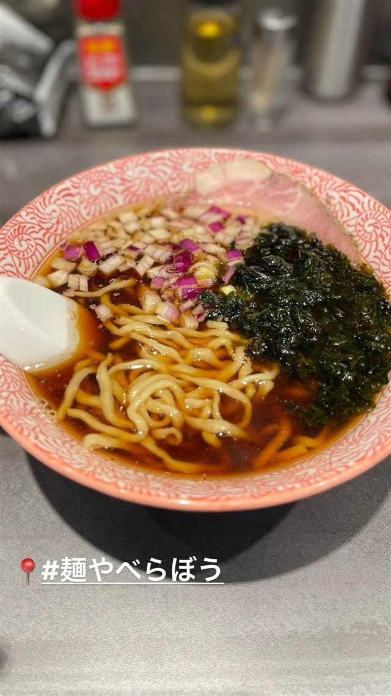
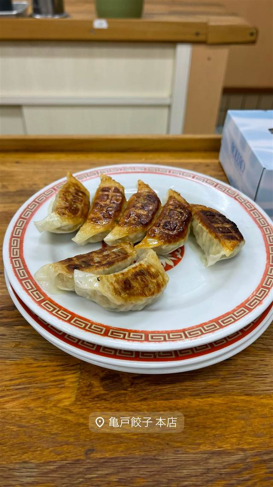
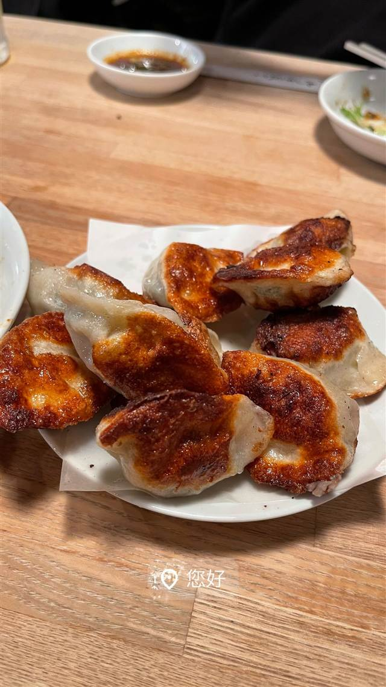
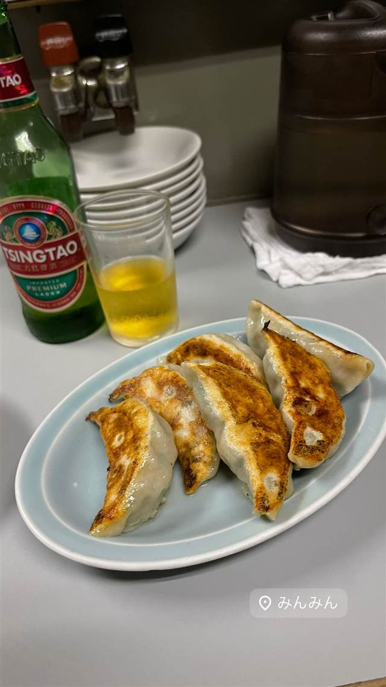
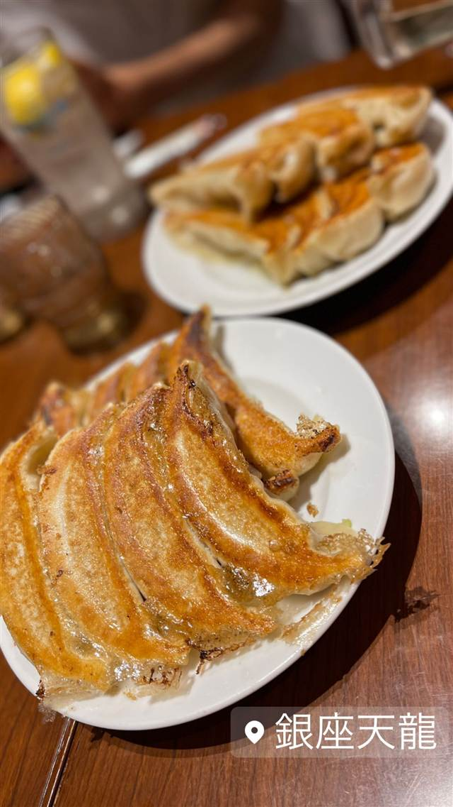

餃子の店 おけ以
東京に焼き餃子を広めた老舗、羽根つき餃子は1日1300個
餃子の店 おけ以
1954年、中国からの引き揚げ者だった田中ヒロ子さんが神保町で始めた餃子店がルーツで、当時まだ珍しかった「焼き餃子」を東京に広めた老舗のひとつ。1988年に飯田橋へ移転し、現在は先代と縁のあった馬道家が経営を継いでおり、もちもちの皮とパリパリの羽根が自慢の餃子は1日1300個も出る人気で、ミシュランのビブグルマンにも選ばれている。
TRIVIA
豆知識
- 中国では茹でて食べるのが一般的だった餃子を、東京で最初期に「焼き餃子」として出した店の一つとされる
- 1954年に神保町で創業し、1988年に現在の飯田橋に移転した
- 創業者一家から先代と縁のあった別の家族（馬道家）に経営が引き継がれ、今も味を守っている
REVIEWS
世間の評判
3.65食べログ
もっちり餃子と回転の良さ
- もっちりとした皮と餡の餃子の食感が本当にたまらないという声が多い
- 980円ほどのセットメニューの量とコスパの良さを評価する声が多い
- 土日祝は開店30分前から行列ができ30分から1時間待つこともあるという声が多い
- ニンニクやニラの風味がかなり強めで好みが分かれるという声もある
食べログ 口コミ2903件
| 創業 | 1954年（昭和29年）創業 |
|---|---|
| 系譜 | 創業者は中国からの引き揚げ経験を持つ田中ヒロ子氏。2005年に先代と縁のあった馬道晴康氏親子が経営を継承し、現在は息子の馬道仁氏が店主 |
| 看板 | 羽根つき焼き餃子 |
| こだわり | もちもちの皮とパリパリの羽根、肉汁たっぷりの餡にこだわる |
| 掲載・評価 | ミシュランガイド東京のビブグルマンに2018・2019年の2年連続選出 |
| どこから | 都心 |
| 行くなら | 行列 |
| 営業時間 | 月〜金 17:00-21:00 土 11:30-14:00、17:00-21:00 日 休み |
| 予算 | 昼 ¥1,000～¥1,999 夜 ¥1,000～¥1,999 |
| 場所 | 飯田橋駅 東京都千代田区富士見2-12-16 |
| メモ | 1日約1300個出る人気で行列必至 |
食べたもの：餃子とビール / 炒飯
NEARBY
近い店・同じ系統の店
-
 ★
焼肉 飯田橋駅
好ちゃん 飯田橋本店
食べログ百名店に6年連続選出されたホルモン焼肉
夜 ¥6,000～¥7,999
★
焼肉 飯田橋駅
好ちゃん 飯田橋本店
食べログ百名店に6年連続選出されたホルモン焼肉
夜 ¥6,000～¥7,999
-

醤油・中華そば 飯田橋駅 麺や べらぼう TRY大賞煮干し部門1位、うるめ節香る淡麗煮干しそば 昼 ¥1,000～¥1,999 夜 ¥1,000～¥1,999 -

餃子専門 亀戸駅 亀戸餃子 本店 座ると自動で2皿確定、1955年創業の下町餃子専門店 昼 ～¥999 夜 ～¥999 -

餃子専門 幡ヶ谷 您好（ニイハオ） ひき肉でなく粗く刻んだ肉を使う、連続ビブグルマンの餃子 昼 ¥2,000～¥2,999 夜 ¥2,000～¥2,999 -

餃子専門 乃木坂 赤坂珉珉（みんみん） 酢コショウで食べる元祖、渋谷の名店直系ののれん分け店 夜 ¥4,000～¥4,999 -

餃子専門 銀座一丁目 銀座天龍 本店 ニンニクを使わず白菜と豚肉だけで作る12cmの大判餃子を創業以来守る 昼 ¥1,000～¥1,999 夜 ¥3,000～¥3,999